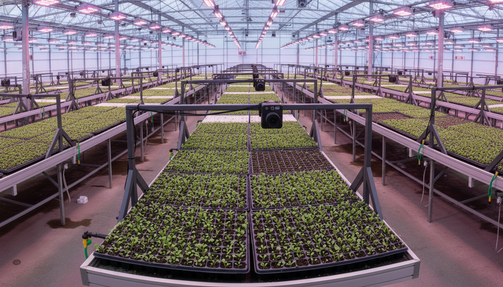

IA de última generación
Del conteo manual
a la precisión AI
No dejes que el éxito de tu vivero dependa de conteos manuales lentos y ojos cansados. ÓpsisAI es tu experto incansable: analiza cada charola al instante, dándote confianza inmediata en tus números.
90%±
Precisión
90%
Ahorro de tiempo
<2s
Por análisis
Análisis en vivo
Procesando
